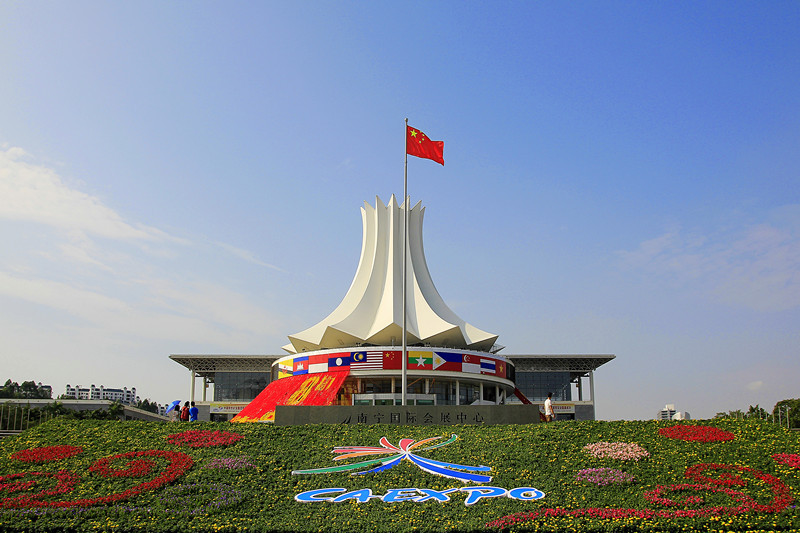

走进南宁
-

南宁简介 南宁，简称“邕”，是广西壮族自治区首府，全区政治、经济、交通、科教文卫、 金融和信息中心，是中国面向东盟开放合作的前沿城市、中国—东盟博览会永久 举办地、北部湾经济区核心城市、国家“一带一路”有机衔接的重要门户城市。
-

南宁文化 南宁别称绿城、凤凰城、五象城。旅游资源丰富，北连桂林，南接北海，构成了广 西的黄金旅游带。壮丽的边关风采、浪漫的海滩风貌、迷人的异国情调，星罗棋布 的灵山秀水，古朴悠远的古迹故址，山、水、人、情构成南宁多层次的旅游景观。
-

南宁历史 南宁历史悠久，在古代，南宁属于百越领地。秦始皇统一岭南地区后，南宁属于桂 林郡。西汉时期，汉武帝又将它置于玉林郡管辖。东晋大兴元年（公元318年），置 大兴郡，以南宁为郡治所在地，南宁建制从此开始，至今已有1600多年。